Who is Henry
I was obsessed with it anyway. Not with the work itself, but with being busy at it. Stacked projects, no white space on the calendar, the last train home. For a long time, that was the only evidence I had that I was worth anything.
This is where it started.
01 The room
Student council office · autumn 2016 · almost 8pm
Eight of us were still there, counting boxes of school anniversary merchandise against a handwritten list that had been wrong since September. Two of my teammates were arguing about a number that would not reconcile. This happened most nights that season, and it happened every year before us.
We were all exhausted. Nobody wants to spend their evenings in a basement warehouse counting hoodies until eight.
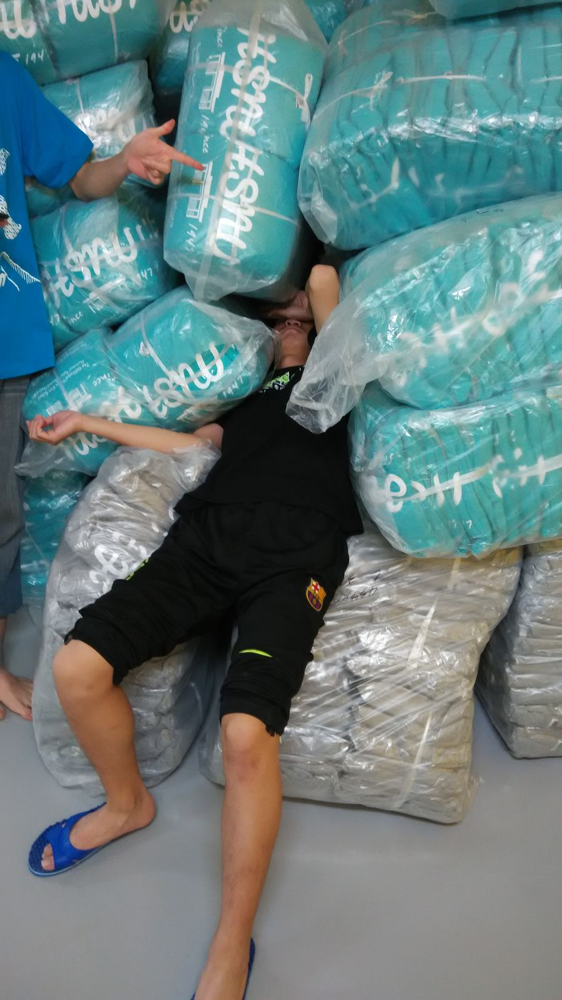
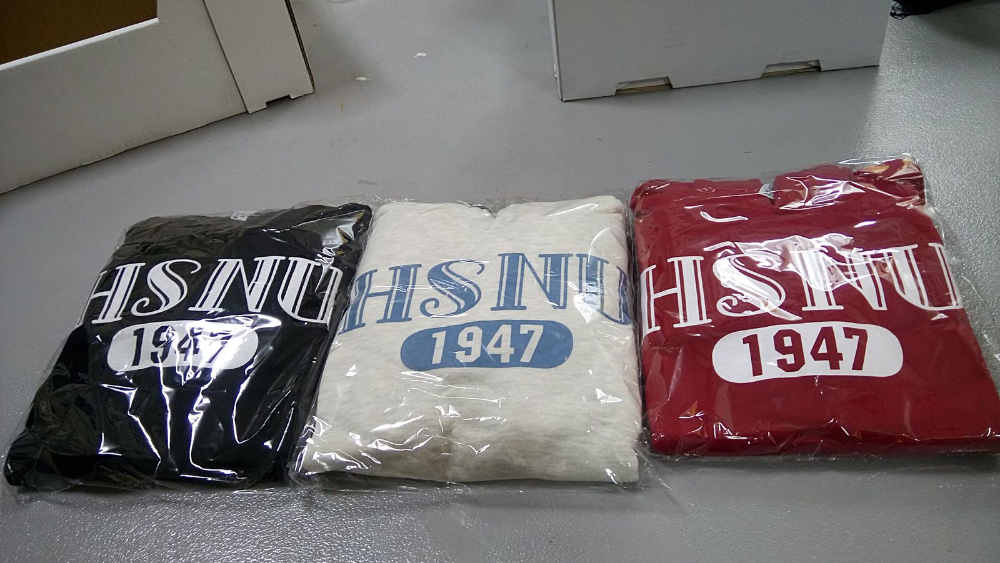
This is stupid — there must be a better way to do this.
I was seventeen. I went home that night and rebuilt the whole thing in a spreadsheet that synced to the cloud.
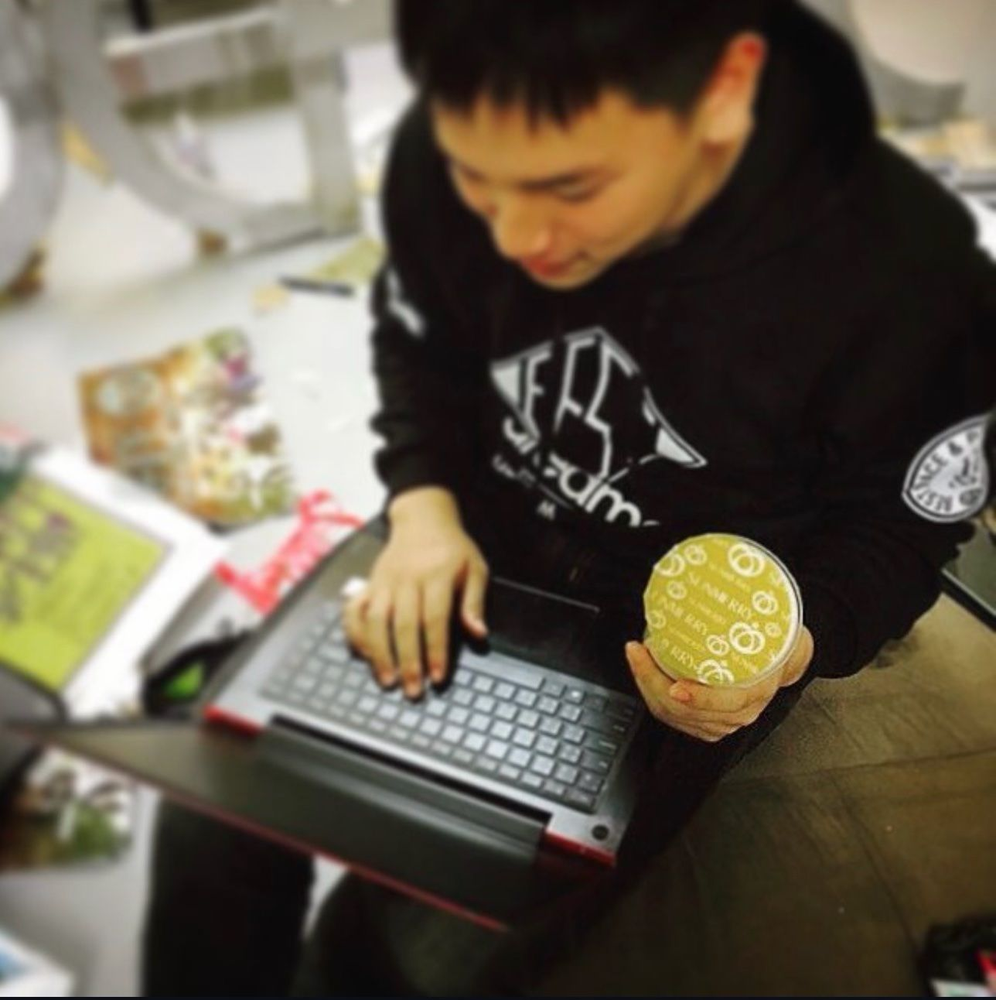
The next year, one person did that job. Not eight.
I have spent ten years trying to explain why that mattered so much to me.
This is the closest I have come.
02 Rewind
To understand why a spreadsheet moved me that much, you need to know what I thought I was worth.
My parents both worked. They were tired, but they still gave me everything they had. I was too young to have the words to express my gratitude, so I paid them back in the only currency I understood, the one with a clear external standard: Being the kid with perfect grades. In Taiwan, that is not an achievement. That is an identity.
Then I got into the best high school in the country and met the boys who slept through class, played ball after school, and beat my scores anyway. I studied harder. I still lost. And a question opened up that I could not close:
If I'm not the smartest, what exactly am I worth?
So I changed the game. I joined the student council and ran everything I could get my hands on — anniversary events, graduation, sports days — at a pitch that was close to obsessive.
If I could not be the smartest, I would be the one who worked hardest at everything outside the classroom. That was the whole plan.
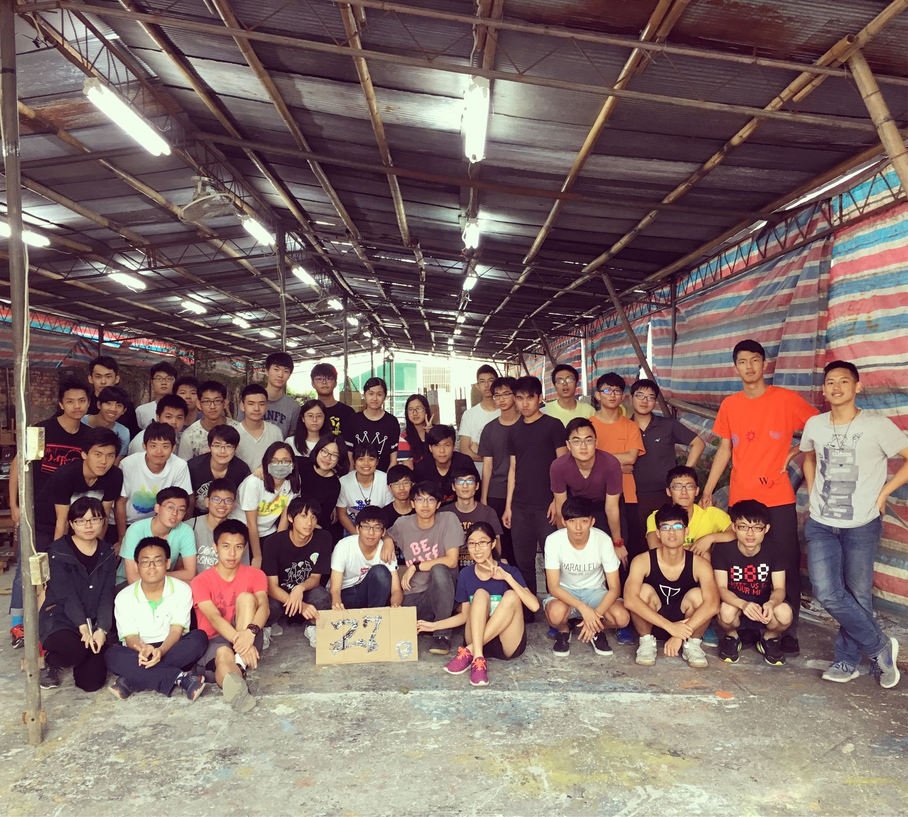
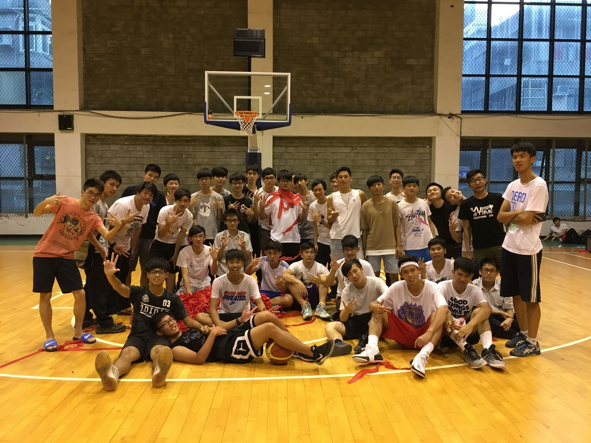
A teammate ended it in one sentence.
"You love being busy — fine. But stop pushing your standards onto us."
First rejected on grades. Now rejected on the one thing I had left.
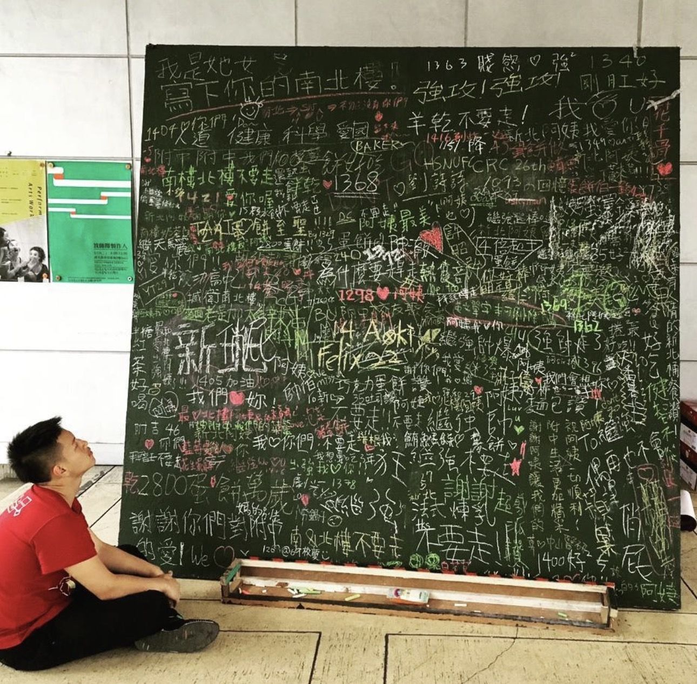
03 The turn
That is the state I was in, in that office, at eight at night.
The system I built that autumn did the obvious things. It ended the recurring losses. It turned a profit. It saved a program that was one bad year away from being canceled for good.
But that is not the part I remember. What I remember is that nobody argued about the count again, and nobody stayed until eight. For two years I had been trying to prove my worth by out-working the people around me and being the busiest person in the room — and the thing that finally made me feel worth something was taking work away from them.
Standing in that office, I remember thinking: this is valuable. So this is what valuable feels like.
It was the first evidence I had that I might be good at something other than being the best in the room. I was good at finding the simple logic underneath a mess, and building it into something that helped other people work less.
That was also the first time I fell in love with technology — because of Excel.
Technology can really change people's lives.
04 The hire
Fast forward five years. I joined Microsoft, and guess which team I landed on. Modern Workplace productivity, with Excel sitting in my portfolio.
The spreadsheet a seventeen-year-old taught himself on his bedroom floor had become the thing I stood on stages to explain. Same tool. Same idea: find the simple logic underneath a mess, and hand it to people so they can go home. Only now the room was not eight students in a basement. It was millions of professionals I never met before.
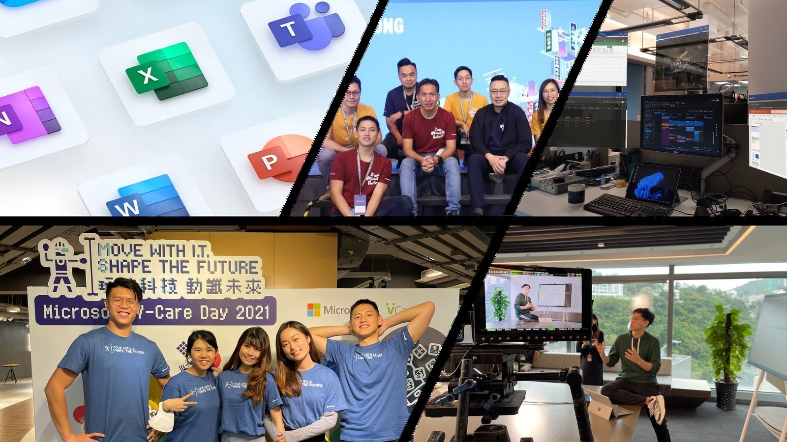
It was just a tool, but eventually became my passion.
05 Again
In 2023 I decided to apply to business school. My work experience was thin, my undergraduate GPA was not what it needed to be, and the old question came back wearing a new costume:
What makes you think you're good enough for this?
So I did exactly what seventeen-year-old me did. In the second half of that year alone I sat the GMAT, sat the highest level of the Japanese proficiency exam, launched a tech podcast that reached the top 15 in Hong Kong, finished an MIT data analytics course, earned an ESG certification, held down my full-time job at Microsoft, and got nominated for an award given to the top three percent of employees worldwide.
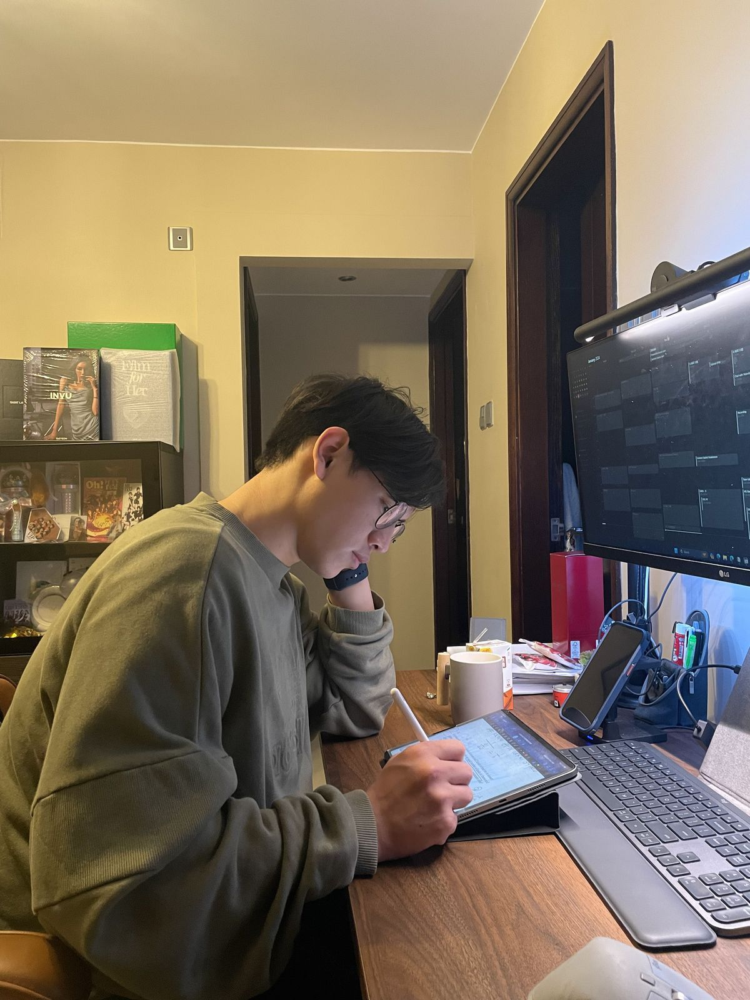
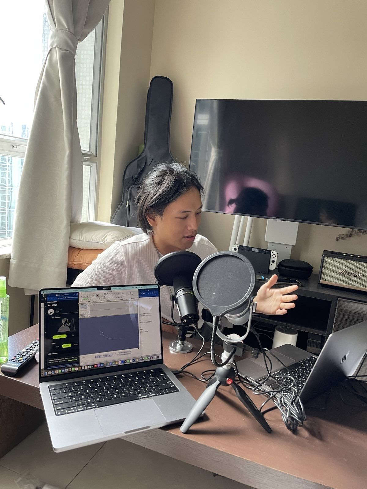
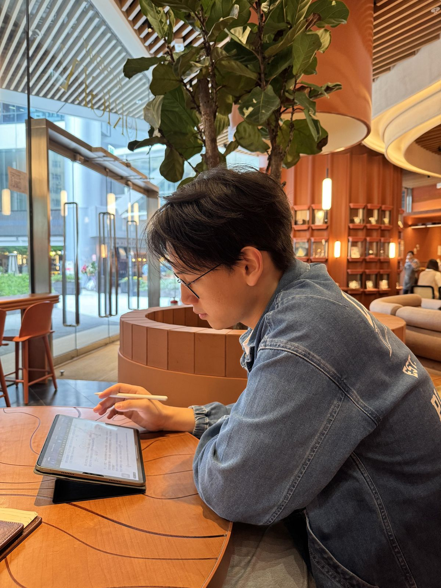
From the outside, that list reads like ambition. From the inside it was the same boy asking the same question, pretending that being busy was the same as being worth something. By then I was breaking down on a schedule.
I was sick constantly and tired all the time. Then, two weekends in a row, my fever climbed to almost 40°C and I was admitted to hospital for a full workup. Every indicator came back normal. Deep down I already knew what it actually was: anxiety.
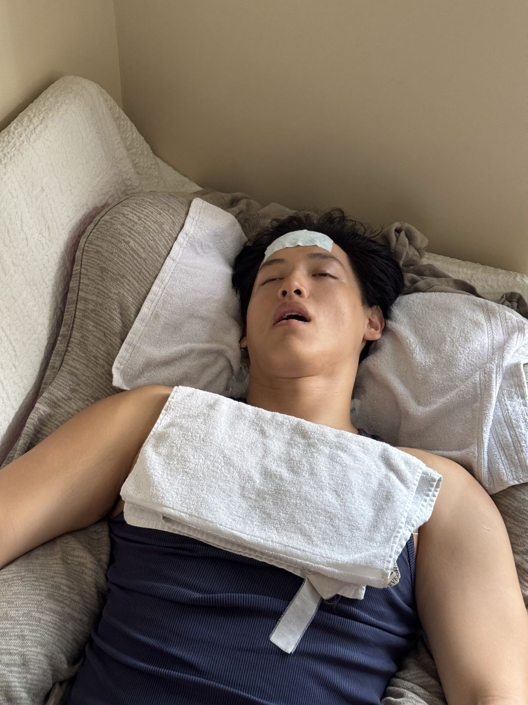
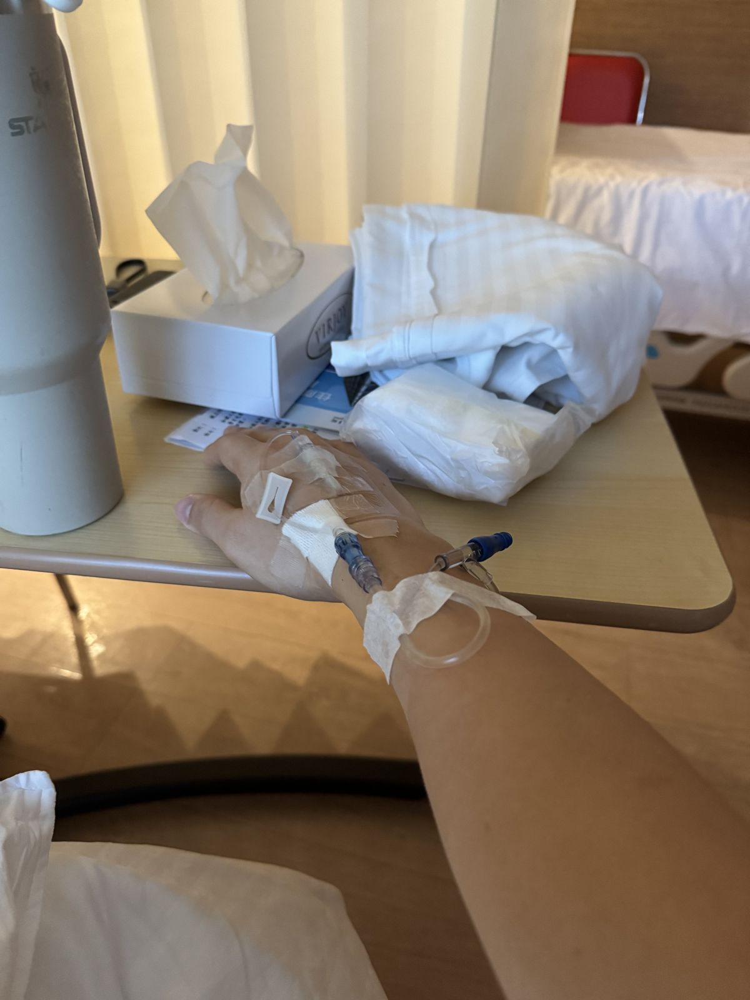
The night I left the hospital and came home, my girlfriend asked me the question that went straight through me:
"Why do you keep wearing yourself down to nothing, and then come home like that to the people who love you?"
That was a punch to the stomach. Somewhere along the way, the thing I had started as a way of repaying the people I love had become the reason I was hurting myself and worrying them. Was I keeping myself this busy so that I could watch them worry about me?
Here is the part that is hardest to admit. I had been selling productivity software at Microsoft for three years. Three years on stages explaining how it gives people their time back — and I was not using any of it. To me, it was an app, a product, a thing in a deck.
Then I actually tried it: frameworks first, Inbox Zero, and Getting Things Done, then “building” a second brain, then now my own AI agent. Within a week I could see, for the first time, exactly what I was carrying and what I was not. Within months, the specific anxiety of I am so busy and I don't know what I am busy with was simply gone.
Productivity tech pulled me out of that spiral of anxiety.
For the second time in my life.
06 So this is why
Like it or not, work is most of life. If I can take a little friction and a little confusion out of someone's work — if I can hand a person, or a team, something they could not do the day before — that is not a small thing. That is giving somebody their evening back.
Do a little more, prepare a little harder, and the value will finally be seen.
Package what you know into a system other people can run, and it keeps working when you are not in the room.
Technology should make people more capable, not more busy.
I do not say that as a slogan. I say it as someone who was the busiest person he knew, and was not more capable for it. That is why I work on productivity technology — not because it is a market, but because it saved me twice, and I would like to be the one who does that for somebody else.
07 Two mirrors
He makes complicated things easy to understand.
Notion
You take messy, scattered ideas and turn them into a beautifully structured, highly functional system that makes everyone else's lives easier and more productive.
Colleague, Microsoft
Everything on my side of this page is about craft. But when I asked those same ten people what I should do more of, not one of them said craft.
They see someone who has not learned how to stop. The seventeen-year-old is still in there.
I truly believe technology should never make us busier; it should make us more capable.
Ten years on, I still catch myself measuring my worth in output (and it is hard not to in an MBA classroom). The difference is that now I have systems that keep me organized and focused, and tell me when to rest. And I am building one that can do the same for other people.
Back to the name card and contactScroll to explore · Esc to close